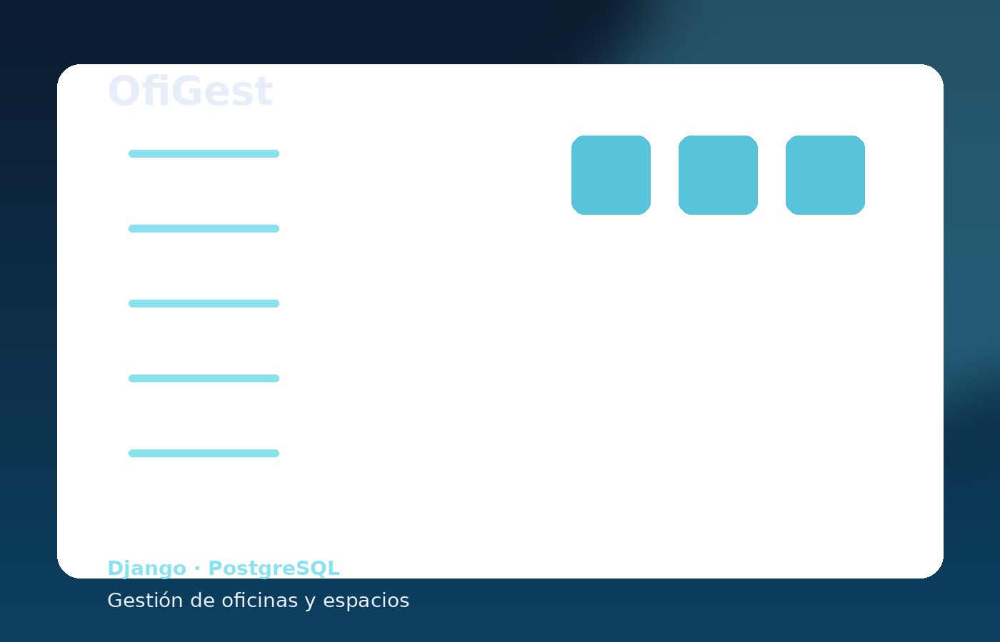
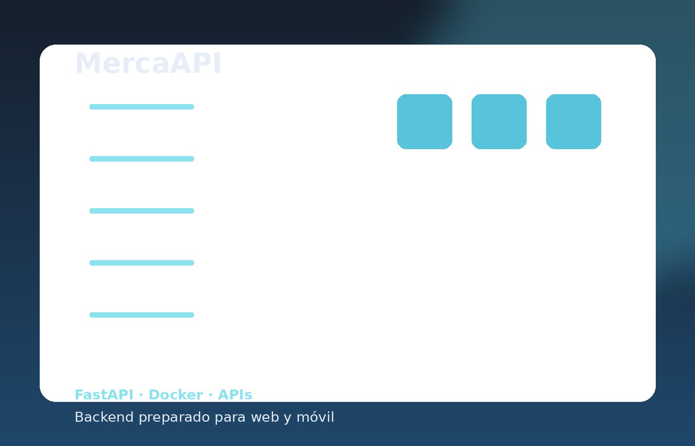
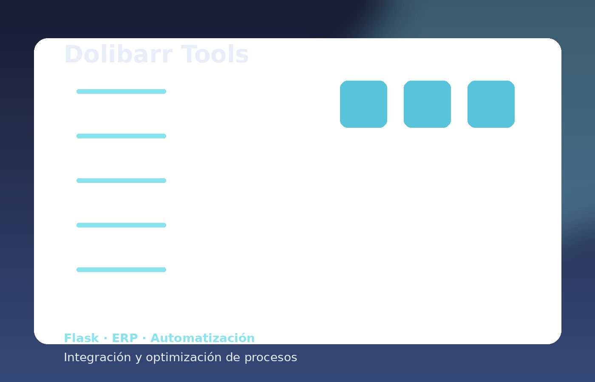

OfiGest (Automaworks)
Plataforma integral para la gestión de alquiler de oficinas. Desarrollada en Django, orientada a operativas de negocio reales y desplegada en contenedores Docker.
Ver proyectoSoy un desarrollador senior enfocado en Python (Django, FastAPI) y en la orquestación completa de productos web. Aporto más de 20 años de experiencia técnica: no solo escribo código limpio, sino que domino la administración de servidores (Linux, VPS, Plesk, WHM), infraestructuras con Docker y despliegues robustos en ecosistemas como WordPress y E-commerce.
Desarrollo de APIs e integraciones complejas usando Python. Diseño de lógicas de negocio sólidas capaces de automatizar flujos de trabajo en empresas y ERPs.
Autonomía total en despliegues. Configuración y mantenimiento de entornos Linux, servidores VPS dedicados, contenerización con Docker y paneles como Plesk y WHM.
Años de experiencia resolviendo problemas reales de negocio con WordPress, WooCommerce y PrestaShop. Integraciones a medida, SEO on-page y optimización de rendimiento.
Un perfil híbrido real significa entender cómo el código interactúa con la máquina. Esta es mi caja de herramientas para construir y alojar de manera segura.

Plataforma integral para la gestión de alquiler de oficinas. Desarrollada en Django, orientada a operativas de negocio reales y desplegada en contenedores Docker.
Ver proyecto
Backend de alto rendimiento construido con FastAPI. Prepara y sirve datos en tiempo real para consumo web y móvil, alojado en un VPS Linux propio y securizado.
Ver proyecto
Más de 50 proyectos desplegados en mi trayectoria (WordPress/PrestaShop). Desde la integración de pasarelas de pago complejas hasta la administración técnica del hosting en Plesk/WHM.

Scripts a medida e integraciones para el ERP Dolibarr. Sincronización de catálogos y automatización de procesos para ahorrar horas de trabajo manual en empresas.
Ver proyectoDesarrollo e implementación de e-commerce y proyectos corporativos. Lidero la administración de servidores de clientes, mantenimiento técnico, seguridad y personalizaciones avanzadas en WordPress/PrestaShop.
Gestión de proyectos end-to-end. Desde la identidad visual y UX/UI, hasta el despliegue de servidores privados (VPS) y la puesta en marcha de aplicaciones web para pymes.
Máster Avanzado en Programación en Python (Escuela Internacional Posgrado). Foco en Django, FastAPI, Docker, despliegue seguro y análisis de datos.
Busco integrarme en proyectos donde mi experiencia híbrida aporte valor: solidez en backend, autonomía en servidores y visión clara de producto.